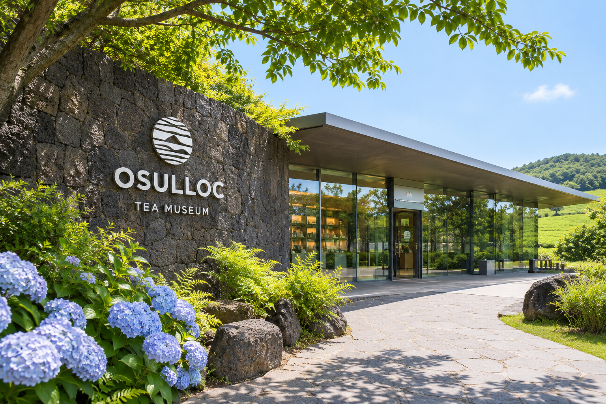

01 / 03
01 CATEGORY
오늘의 차를
골라보세요
02 BEST PRODUCT
지금 가장
사랑받는 차
03 BRAND STORY
바람과 햇살이
키운 한 잎
화산섬 제주의 맑은 공기와 부드러운 바람, 오랜 시간 가꿔온 차밭에서 한 잎 한 잎 정성으로 자란 찻잎을 담습니다.
- JEJU화산토와 바다 바람이 만든 제주만의 풍미
- NATURE계절의 리듬에 맞춰 천천히 자라는 차밭
- TEA한 잔에 오래 머무는 여유로운 티 라이프
04 TEA LIFE
차와 함께하는
작은 의식

05 TEA MUSEUM
차를 천천히
머물러 보는 곳
제주 서귀포의 차밭 곁에서 차의 역사와 문화를 전시로 만나고, 향긋한 한 잔과 느린 오후를 보내는 공간입니다.
- EXHIBIT차의 역사와 도구 전시
- CAFE제철 차와 디저트
- WALK차밭 산책 코스
06 JOURNAL